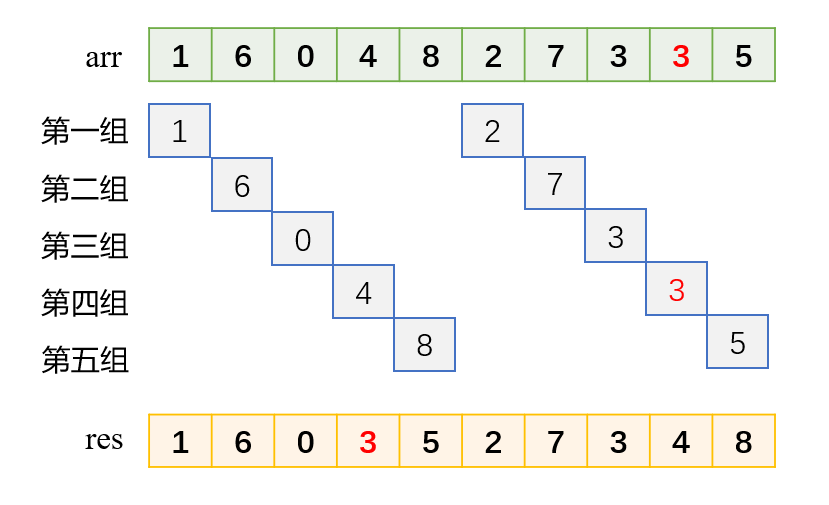
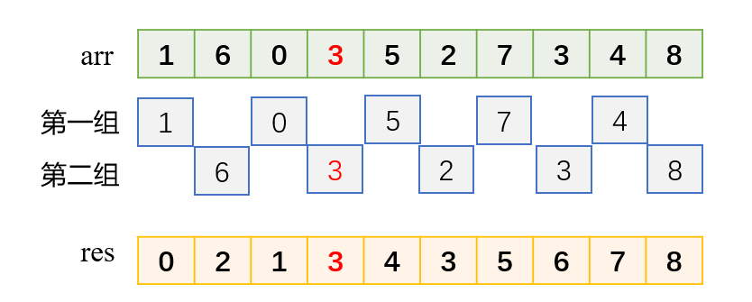

参考博客：https://mp.weixin.qq.com/s/4kJdzLB7qO1sES2FEW0Low
希尔排序
直接插入排序的最好时间复杂度为O(n),当数据基本有序或者数据量较小时，插入排序比较高效，但是当数据量变大了之后，移动次数变多了，插入排序的效果变差。希尔排序改进了插入排序，对于较大规模的数据及无序数据较为有效，希尔排序在逻辑上把整个数组分为多个子数组，然后对每个子数组进行插入排序，数据量变小，效率高，如下例所示，按照间隔进行分组，首先取间隔为数组长度的一半：

经过分组排序后，小一些的数据基本分布在左边，大一些的数据基本分布在右边，较为有序，把间隔变为原间隔的一半，再进行插入排序：

可以看出，数据基本有序，最后再进行一遍插入排序，且插入排序的效率会高一些，希尔排序的代码如下：
1
2
3
4
5
6
7
8
9
10
11
12
13
14
15
16
17void insertSort(vector<int>&arr, int gap, int i){
int index = i - gap;
int tmp = arr[i];
while(index >= 0 && arr[index] > tmp){
arr[index + gap] = arr[index];
index -= gap;
}
arr[index + gap] = tmp;
}
void shellSort(vector<int>&arr){
int lens = arr.size();
for(int gap = lens/2; gap > 0; gap /= 2){
for(int i = gap; i < lens; i++){
insertSort(arr, gap, i);
}
}
}从代码中我们可以看出，分组之间的排序不是一个组先排好序，再进行下一个组的排序，而是轮流对每个组进行排序，插入排序的过程同直接插入排序一样的，只是把间隔1改成了gap.
希尔排序是不稳定的，从上面的图中可以看出两个3之间的相对位置发生了变换，空间复杂度为O(1),希尔排序的时间复杂度跟序列间隔有关，计算较为复杂，平均时间复杂度为O(n^1.3),最坏时间复杂度为O(n^2),最好时间复杂度为O(1).